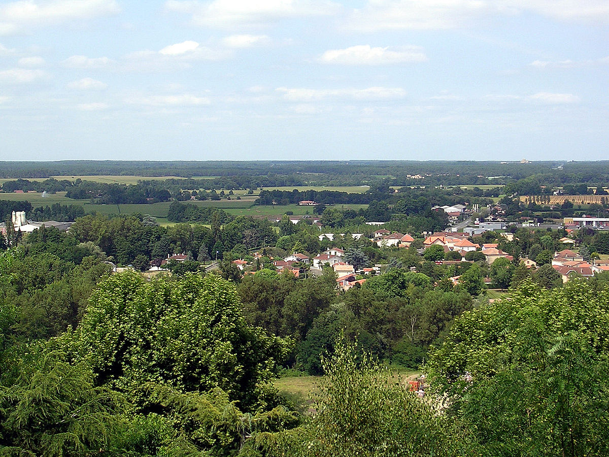

Вернуться на главную страницу
Gallery
Природа
Горы и равнины
Франция является третьей страной Европы по площади. Последняя составляет 551 500 км квадратных. Страна имеет выход к морю и разнообразный рельеф. Она богата природными ресурсами и полезными ископаемыми, создающими выгодные условия для экономического развития государства.Рельеф Франции на картеПреобладание равнин и невысоких массивов, расположение мощных горных систем на окраинах Франции и невысокие перевалы делают ее территорию удобной для развития внутренних и внешних путей сообщения.
Рельеф Франции характеризуется большим разнообразием. Низменности и равнины запада и севера Франции постепенно возвышаясь переходят в горные цепи. Самая высокая из них - Альпы, располагается на юго-востоке Франции, постепенно возвышаясь к границе с Италией и Швейцарией. Именно здесь располагается высочайшая точка Франции и Западной Европы - гора Монблан (4807м.). Юго-западные границы Франции также отмечены горными хребтами - горной системой Пиренеев. Их высота несколько ниже, чем высота Альпийских хребтов, достигает почти 3500 метров. Для того, чтобы лучше представить себе рельеф Франции в пространственном отношении - следует взглянуть на карту рельефа Франции (физическую карту Франции), где отображены основные природно-территориальные комплексы Франции.
Низменности и равнины Франции
Рельеф Франции в большинстве своем имеет равнинный характер. Низменности тянутся непрерывной полосой от бельгийской границы до Пиренеев. Самая обширная из них – Северо-Французская равнина, или Парижский бассейн, – расположена в тектонической впадине на севере страны. Она имеет блюдцеобразную форму: пласты осадочных пород, полого поднимаясь от центра бассейна (в районе Парижа) к его окраинам, заканчиваются крутыми обрывами – куэстами.

Гаронская (Аквитанская) низменность
На юго-западе страны между горными участками Центрального Французского массива и Пиренеями расположена другая низменность Франции - Гаронская (Аквитанская). Низменность названа по имени реки Гароны, долина которой по сути и формирует низменный рельеф этой местности. Сама долина характеризуется наиболее плодородными землями Франции.
Южная часть Гаронской низменнности плавно переходит в обширную систему гигантских холмов-конусов (возвышенности Арманьяк и Ланмезан), образовавшихся в результате длительного отложения частиц горных пород, нанесенных горными потоками с Пиренеев.
Наиболее равнинный характер имеет западная часть низменности - Ланды. Основанием этой области являются песчаные отложения на твердых водонепроницаемых породах. От моря эту область отделяет гряда песчаных дюн высотой до 90 метров и шириной 4-6 км. Ранее Ланды были сильно заболоченной областью, мало использовались, но в последнее время здесь широко применены дренажные системы, а песчаные почвы засажены сосновым лесом. Морской берег прямолинейный, лишен бухт, удобных для приема крупных судов. Но благодаря обширным ресурсам песка - здесь лучшие песчаные пляжи страны. С осадочными породами Гаронской низменности связаны самые крупные во Франции месторождения нефти (Парантис-ан-Борн) и газа (Лак).
C юго-востока Гаронская (Аквитанская) низменность соединяется с равниной Лангедока, которая выходит дальше к берегам Средиземного моря. Прибрежная зона равнины характеризуется большой степенью заболоченности из-за песчаных почв и изобилия лагун, озер и болот, из-за чего долгое время в регионе свирепствовала малярия, а побережье было пустынным. Здесь не хватало пресной воды.Но в 60-х годах 20 века здесь, также как и в Ландах, были проведены комплекс мелиоративных мероприятий, были построены обширные сети каналов и дорог, были построены водопроводы и крупные туристские комплексы, что оживило местную экономику.
Восточные регионы Франции не имеют больших равнинных территорий. Центральный Французский массив отделяет от Альп и Юры узкая низменность Роны-Соны, а между Вогезами и Шварцвальдом располагаются земли Верхне-Рейнской низменности, основная часть которой располагается на территории соседней Германии в бассейне реки Рейн. Эти равнины представляют собой небольшие грабены, заполненные рыхлыми отложениями и имеют важное сельскохозяйственное и транспортное значение. В Эльзасе обнаружены и используются крупные запасы калийных солей.
Армориканский массив и Лотарингское плато
Северо-западную часть Франции занимает сильно разрушенный древний Армориканский массив. Его поверхность имеет характер холмистых равнин, и высоты лишь в нескольких точках превышают 300 м.
Лотарингское плато, представляет собой возвышенность на северо-востоке Франции (Лотарингия). На востоке граничит с Вогезами, на севере - с Арденнами. На западе Лотарингское плато граничит с равнинами Шампани. Рельеф плато характеризуется дугообразными меридионально-вытянутыми асимметричными грядами и холмами высотой до 350-400 м (Кот-де-Мёз, Кот-де-Мозель и др.), сложенных мезозойскими известняками, которые местами разделены глинистыми, мергелистыми или песчаными понижениями, дренируемыми реками Рейнского басейна и его притоков - рек Мааса и Мозеля.
С древними геологическими областями северной и центральной части Франции связаны многие полезные ископаемые. Залежи каменного угля находятся в предгорных и межгорных впадинах на севере Франции, в Лотарингии и в Центральном массиве. В Центральном массиве и в других герцинских возвышенностях обнаружены самые крупные в Западной Европе запасы урановой руды; здесь же добываются сурьма, золото и другие цветные металлы. В пластах юрских известняков на западе Лотарингского плато найдены месторождения железных руд и залежи каменной соли.
Горы Франции
Центральный Французский массив
В центре, на северо-западе и северо-востоке Франции преобладает холмистый (местами горный) рельеф. Здесь располагаются древние герцинские массивы. Самый обширный из них – Центральный Французский массив, образовался более 200 млн. лет назад (самая древняя геологическая область Франции) из кристаллических твердых горных пород и занимает около 1/6 площади Франции. Потухшие вулканы Санси (1886 м) и Канталь (1858 м) – высшие точки всего Центрального массива.
Пиренеи
На юго-западе Франции, на границе с Испанией расположена горная цепь Пиренеи. Франции принадлежат лишь северные склоны этой горной цепи. Пиренеи значительно ниже Альп: их средняя высота чуть более 2500 м. Горные хребты здесь также как и в Альпах сложены из твердых кристалических пород и менее расчленены чем в Альпах, что делает их менее доступными. В центральной части гор есть только один перевал ниже 2000 м. В далеком прошлом Пиренеи были покрыты ледниками, о чем говорят многочисленные цирки, кары и другие ледниковые формы рельефа. Среди них особенно знаменит величественный ледниковый цирк Гаварни с почти отвесными стенами высотой 400–500 м, откуда низвергаются водопады, рождающие р. По. Следует отметить, что в настоящее время в Пиренеях ледников почти не осталось.
Французские Альпы
К востоку от реки Роны громоздятся хребты Французских Альп, которые представляют собой западную часть самого высокого в Западной Европе горного массива - Альпы, со средними высотами горных пиков в 3,5–4 тыс. м. Особенно грандиозны северные хребты гор – Савойские Альпы, увенчанные ослепительно сверкающими на солнце белыми шапками снегов и ледников. Большинство гор французских Альп покрыто ледниками и снежными шапками, которые постоянно смещаются. Горные массивы характеризуются широкими и глубокими долинами, создающими прекрасные условия для сообщения между странами. Альпы имеют прекрасные условия для развития горнолыжных курортов. Кроме удобных спусков располагаются здесь карстовые пещеры, также привлекающие туристов.
Реки и озера
Внутренние водные ресурсы Франции отличаются многообразием, это развитая речная система и множество озер. Большая часть рек берет начало в бассейнах Атлантического океана и центральных горных районах. Самой длинно по праву считается Луара с протяженностью в 1020 км и бассейном 115 120 кв.м. Озера разделяются на три большие группы – горные, располагающиеся на морском побережье, равнинные. Происхождение озер преимущественно ледниковое, самым крупным является Бурже с общей площадью в 45 кв.м, находящееся в Альпах.
Вторая по величине река Франции – Сена, ее длина около 776 км. По предположению историков название – это кельтское слово, переводящееся приблизительно, как «священная речка». Исток ее расположен в Бургундии на плато Лангр на высоте 471 м над уровнем моря, а устье впадает в пролив Ла-Манш. В самой извилистой части русла находится столица Франции – Париж, которую Сена делит на две части. Кроме того суда вдоль этой крупнейшей транспортной магистрали заходят в портовые города Пуасси, Гавр, Руан. Самый большой приток Сены – река Уаза, а более мелкие – Марна, Йонна, Об. Пойма в общей сложности охватывает площадь около 79 тыс. кв.км.

Третья по величине французская река – Рона, ее длина около 812 км. Пересекает территорию не только Франции, но и соседней Швейцарии. Пойма охватывает бассейн площадью 98 тыс. кв.м. Исток берет свое начало в Ронском леднике в Лепонтинских Альпах на высоте 1753 м над уровнем моря, а устье впадает в Лионский залив Средиземного моря. Название Рона означает мужское имя, а крупный приток Сона – женское.
Красивейшие города Франции расположены на берегах Роны – Валанс, Лион, Авиньон, Арль и другие. 13 шлюзов и обводных каналов сделали реку важнейшей судоходной артерией страны. Каскад ГЭС – не единственный источник электроэнергии, поступающей от Роны в электросети страны. Вдоль берегов расположены ветряные электростанции, а также построены первая во Франции АЭС – «Маркуль».
Крупные озера Франции
Женевское озеро
Удивительный природный водоем, крупнейший в Альпах и второй по величине в Центральной Европе. Озеро расположено на высоте 372 м над уровнем моря и насчитывает 310 м в своем самом глубоком месте. Северный берег принадлежит Швейцарии, а южный – Франции. Озеро входит в пойму Роны и по форме больше всего напоминает полумесяц. Каждый, кто хоть раз побывал на берегах Женевского озера, навсегда запоминает удивительный насыщенный синий цвет его вод. Швейцарская ривьера и знаменитый замок Шильонский замок находятся именно здесь. До сих пор воды бороздят 5 колесных швейцарских пароходов, построенных в начале XX века.
Озеро Лак-дю-Бурже
Самое большое по величине озеро во Франции, площадь которого составляет 44,5 кв.км, расположено с восточной стороны кряжа Шейн-де-л'Эпин. Наибольшая глубина водоема – 145 м. Интересно озеро тем, что по историческим сводкам никогда не замерзало, хотя находится на высоте 231 м над уровнем моря. Интереснейшая достопримечательность на берегу– замок Прайори, построенный в XI веке. Судоходный канал соединяет воды Лак-дю-Бурже с Роной. Сегодня озеро является крупнейшим туристическим объектом, поскольку здесь можно заняться любым видом водного спорта, а также отправиться в горы.
Географическое положение страны очень выгодное, Франция богата внутренними водными ресурсами, с южной стороны она омывается водами Средиземноморского моря, с западами – водами Атлантического океана. Это положительно сказывается на климате страны – более мягком и не таком сухом, как для многих других стран-соседок Франции
Растения и животные
Растительный мир Франции
Снежные участки горных вершин практически голы и безжизненны, изредка там можно встретить мхи и лишайники. Здесь можно увидеть заболоченные участки и торфяники.
Под горными вершинами развернулись альпийские луга. На них растут обычные ромашки, колокольчики и другие цветы. Также можно встретить дикую морковь, дудник, таволга. На французских альпийских лугах возрастает множество полезных и лекарственных растений. Арника помогает избавиться от боли в мускулах, кудрявая лилия использовалась в пищу, пока не стала охраняемым видом. Дикая орхидея помогает при лечении гастрита. Пивовары раньше использовали горечавку для придания напиткам специфического вкуса. Смолевка используется французскими и итальянскими поварами для приготовления различных блюд.
Под альпийскими лугами начинается лесная зона, представляющая собой хвойные леса. В них растут сосны, лиственницы, пихты, ели.Хвойную полосу сменяет широколиственная зона. Эти леса богаты дубами, каштанами и буком.Однако лесов во Франции осталось достаточно мало, потому что эти земли начали использоваться человеком для взращивания культурных видов растений.
Средиземноморское побережье Франции пригодно лишь для захоустойчивых растительных пород. Это произошло потому, что люди истребили растущие там породы, а дожди способствовали оголению земного покрова. Поэтому чаще всего там виднеются невысокие деревья и кусты - маслины, пробковые дубы, альпийские сосны, можжевельник, мирт и олеандр. Также эти территории богаты экзотическими видами растений - эвкалипты, пальмы и агавы.
Животный мир Франции
Деятельность человека пагубно отразилась на животном мире. На сегодняшний день многие особи истреблены или занесены в красную книгу. Но в местных заповедниках можно встретить немалое количество среднеевропейских, средиземноморских и альпийских представителей животного мира, например, бурых медведей, сернов и каменных козлов.
Но все же некоторые виды животных сохранились и обитают в естественной среде. Хищными представителями этих животных являются: лисицы, барсуки, генетты. Из мелких грызунов встречаются белки, мыши и крысы.
В лесных массивах можно наблюдать зайцев и летучих мышей. Также в тени деревьев нашли свое пристанище благородные олени, косули, кабаны и бобры. В горах острова Корсика обитают муфлоны.
Мир пернатых более разнообразен, нежели животный. В Пиренеях, поднимаясь к горным вершинам, можно услышать звуки, издаваемые пеночкой-весничкой. Также можно увидеть снегиря, пищуху, лугового чекана. Повсюду слышны трели певчего дрозда. Лесные территории делят: глухари, пеночки-трещотки, вальдшнепы, краснокрылые стенолазы, белозобые дрозды, альпийские галки, серые и тундряные куропатки и альпийские вьюрки. Хищные птицы также обитают на французских территориях. Основными представителями хищных пернатых являются: бородач, белоголовый сип, стервятники, орлы и орланы.
Водный мир Франции не богат. В основном там водится форель, искусственно выращенная человеком. И лишь в заливах можно встретить сардину, камбалу, сельдь. Представителями морской и океанской живности являются: омары, креветки и различные моллюски. На территории Франции создано около 10 заповедников, в которых обитает большое количество редких видов животных и растений.
Климат
Климат Франции во многом сформировался под влиянием Атлантики. Четыре климатических зоны (атлантическая, континентальная, альпийская и средиземноморская), каждая из которых характеризуется разнообразием природных ландшафтов, растительного и животного мира.
Недаром Франция является излюбленным туристическим направлением для экскурсионного, морского и горнолыжного отдыха. В стране насчитывается свыше сорока природных парков национального и регионального значения. Шумный Париж – это еще не вся Франция. Для того, чтобы понять, насколько прекрасна французская земля в любое время года, нужно побывать в ее провинциях, изобилующих пасторальными пейзажами и уголками нетронутой природы.

Узнать больше о Франции
Contacts